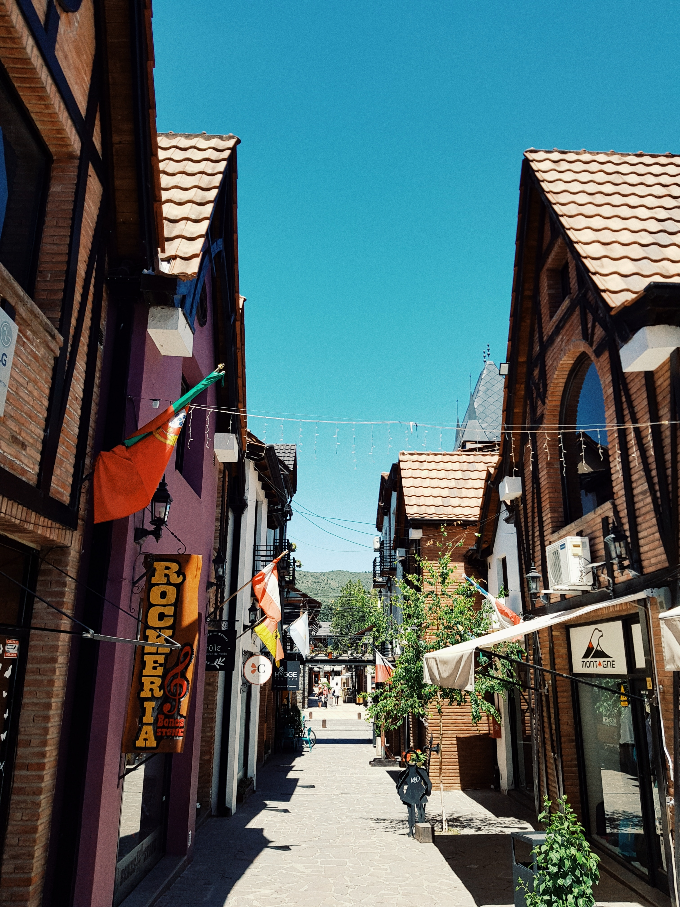
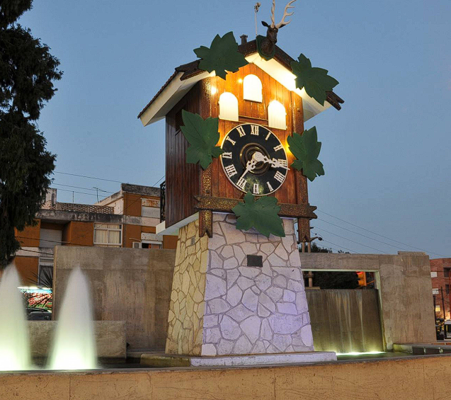
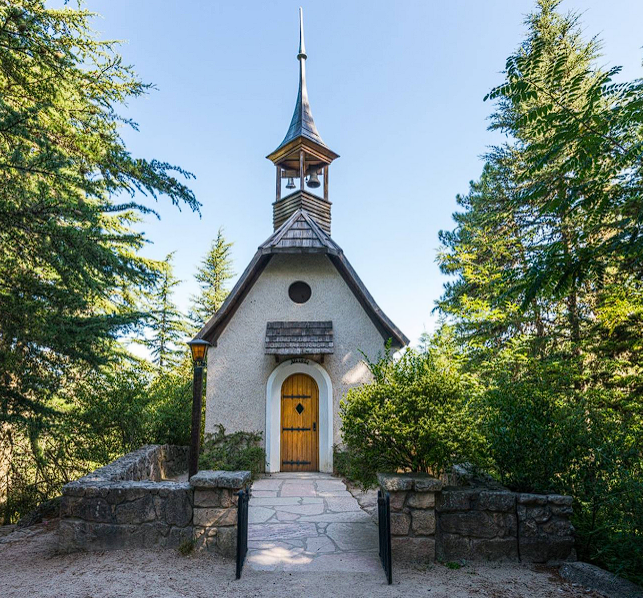

VILLA GENERAL BELGRANO
Rodeada de bosques y arroyos, a unos 89 kilómetros al sur de córdoba capital se encuentra villa general belgrano.esta comuna serrana nació de la combinación de tradiciones de los pueblos nativos e inmigrantes, en su mayoría alemanes. Hoy es uno de los atractivos turísticos más importantes de la provincia, contando con numerosos festejos característicos.
Más allá de los festejos, durante todo el año se pueden emprender caminatas por entornos de pura naturaleza. También se puede visitar sus museos, subir al mirador para obtener panorámicas a 360° o disfrutar de parques de juegos con los más chicos. A la vez, no pueden pasar por desapercibidos sus restaurantes y casas de té y cafés; sus platos centroeuropeos, las cervezas tiradas y la pastelería artesanal.

VILLA CARLOS PAZ
Esta villa turística, situada a solo 30 minutos de la ciudad de Córdoba, es una de las más importantes de la provincia y del país. Elegida por su especial clima serrano, es posible disfrutar de sus paisajes durante todo el año. Destacan, sobre todo en verano, sus balnearios naturales a la vera del río San Antonio y el arroyo Los Chorrillos. El dique San Roque es otro de sus principales atractivos. En él se realizan deportes náuticos, paseos en lancha y en hidropedal, e incluso buceo.
Son protagonistas el Lago San Roque y los ríos San Antonio y el de Los Chorrillos, que junto a los balnearios son ideales para disfrutar de actividades náuticas o descansar. Se pueden realizar paseos de trekking al cerro La Cruz y cicloturismo. Entre parques de diversiones, paseos por el área céntrica, museos y otras propuestas culturales, la oferta es variada y completa.

LA CUMBRECITA
Entre bosques de pino, calles de ripio y aire libre de contaminación, La Cumbrecita es uno de los destinos más populares de las sierras cordobesas. Esta localidad, a 118 kilómetros de Córdoba, es el único pueblo peatonal de la Argentina. Su ritmo tranquilo, el contacto directo con la naturaleza y sus actividades al aire libre han sido motivo de admiración por muchos países del mundo. Los visitantes podrán acercarse a la entrada del lugar, estacionar sus autos en la playa comunal y ajustarse las zapatillas para recorrer las calles céntricas de La Cumbrecita.
Ingresar a esta comuna es iniciar un viaje de tranquilidad, en el que la mano del hombre y la naturaleza encontraron un equilibrio perfecto.
En nuestra página web, hemos creado una sección especialmente dedicada para que puedas explorar y comparar los precios de los distintos viajes que ofrecemos. Nuestra herramienta de precios interactiva te brinda una visión clara y detallada de todas las opciones disponibles, para que puedas planificar tu aventura de manera precisa y acorde a tu presupuesto.